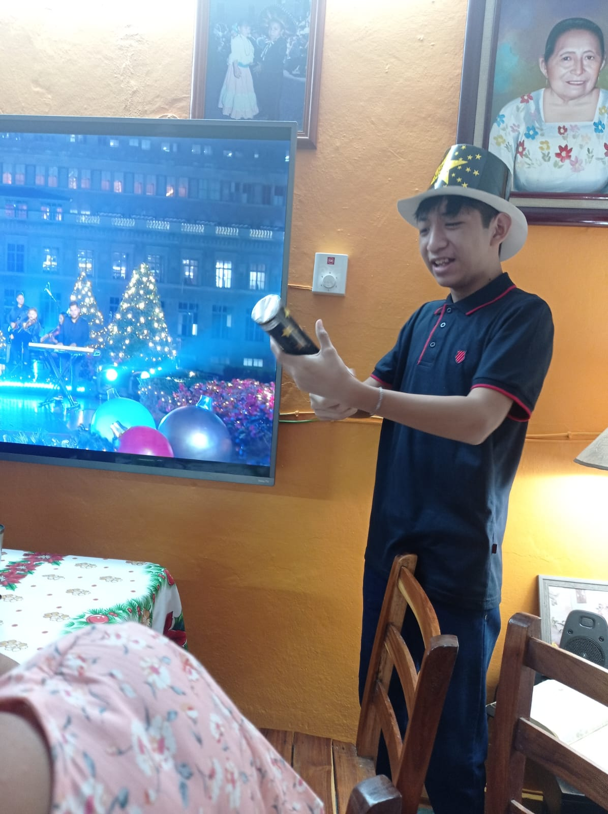

Mi nombre completo es Kevin Jesus Canul Coba, soy originario de un pueblo llamado Valladolid en el estado de Yucatán, México. Soy el segundo hijo de tres hermanos. Nací el 15 de octubre del 2006, actualmente tengo 19 años y estudio Ingeniería en Software en la UADY. Tengo bastantes pasatiempos, entre ellos dibujar y leer.
Actualmente me encuentro cursando el quinto semestre de la carrera de Ingeniería en Software en la Universidad Autonoma de Yucatan y espero poder graduarme en el futuro.
Mi educación prescolar la realice en el Jardín de Niños "Demetrio Rivera Tria" y mi educación primaria en la Escuela Primaria "Artemio Alpizar Ruz"
En el prescolar era un niño muy curioso pero bastante timido solia jugar mucho con mi mejor amigo de ese entones el cual se llamaba Emiliano no recuerdo tanto de como eran las clases mis recuerdos de ese tiempo son mas de mi dia a dia con mi familia el como me levantaba todos los dias encendia la television mientras mi mamá me ayudaba a alistarme para ir a la escuela
En el caso de mi educacion primaria recuerdo mucho mas, en mis primeros años era un niño bastante normal en cuanto a su desempeño aunque destacaba en las matematicas no me interesaba tanto el sobresalir en la escuela ademas que no disfruto ser el centro de atención en cuanto a lo social era bastante malo me costaba hacer amistades recuerdo en ese entoonces solo hablaba con mi mejor amigo del prescolar hasta que lamentablemente cambio de escuela lo que hizo que me quedara sin compañia durante un tiempo tuve la fortuna de que hubo compañeros que se me acercaron y me hicieron comapañia en esa etapa y algunos me siguen acompañando actualmente
Esta etapa de mi vida fue bastante importate pues cambio muchos cosas en tan poco tiempo estudie la secundaria en la Escuela tecnica numero 6 en valladolid mis primeros años transcurrieron normal iba todos los dias a la escuela en bicicleta me encantaba salir de mañana e ir manejando por las calles y como la escuela se encontraba en las afueras podia pasar por una vici ruta esa parte en especifico me encabtana, en esta escuela conoci dos profesores que fueron muy importantes en mi vida el profesor rene y el profesor pantajp que impartian fisica y matematicas considero que ellos son las personas que mi pasion por las matematicas se desarrollara a mitad de mi secundaria comenzo una etapa que marco mucho mi vida la conocida epoca de pandemia aqui fue cuando me desconecte por completo de mis amigos y profesores recuerdo que para esas epocas el profe pantoja me mando un mensaje despidiendose pues hania conseguido un piesto de director en otra escuela recuerod que eso me puso bastante triste fue quien mas me apoyo o al menos yo lo considero asi tambien en esta epoca perdi a damiliares muy cercanos lo que me afecto bastante
En cuanto a la preparatoria estudie en el COBAY de Valladolid los primeros años transcurrieron bastante diferentes a lo habitual comenze con educacion en linea pero a mitad de mi primer semestre afortudamente termino la pandemia y se volbio a las clases presenciales realmente no hubo nada especial en este periodo de tiempo mis clases trataron de ir normales conoci a mas gente de la cual me hice amigo mi desempeño fue regular no destacaba en mucho salvo como siempre en las matematicas lo cual hizo que me especializara como fisico matematico y me capacitara en tecnologia de la informacion y la comunicacion